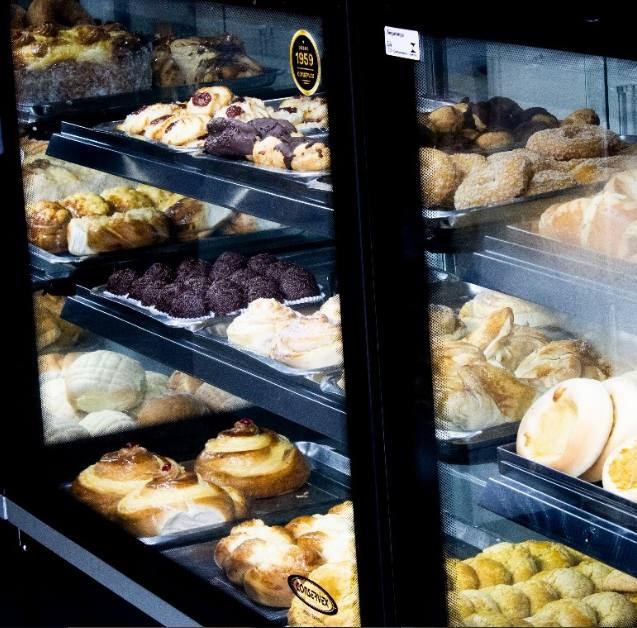
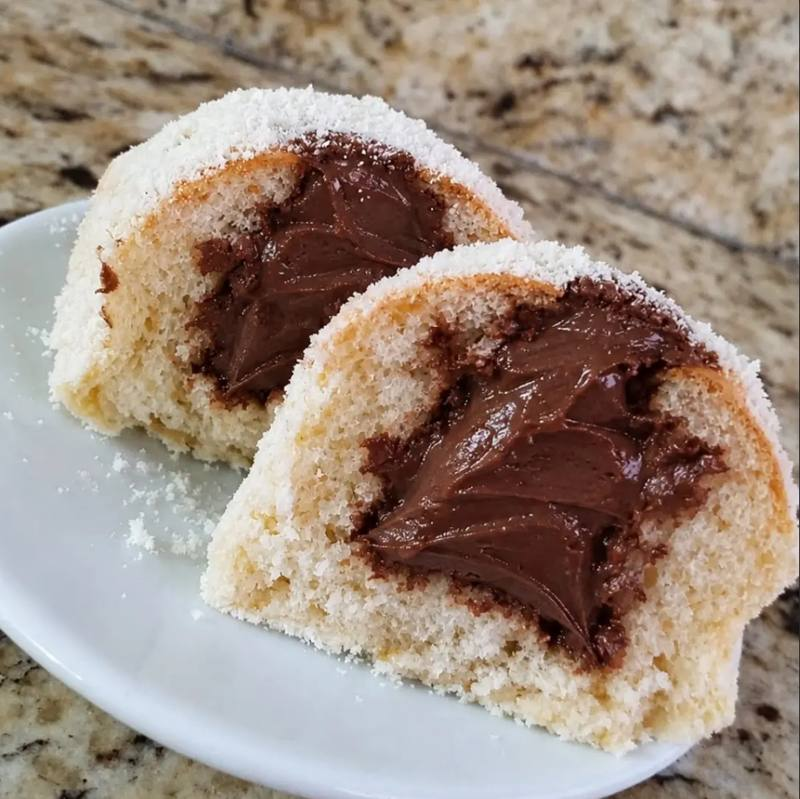
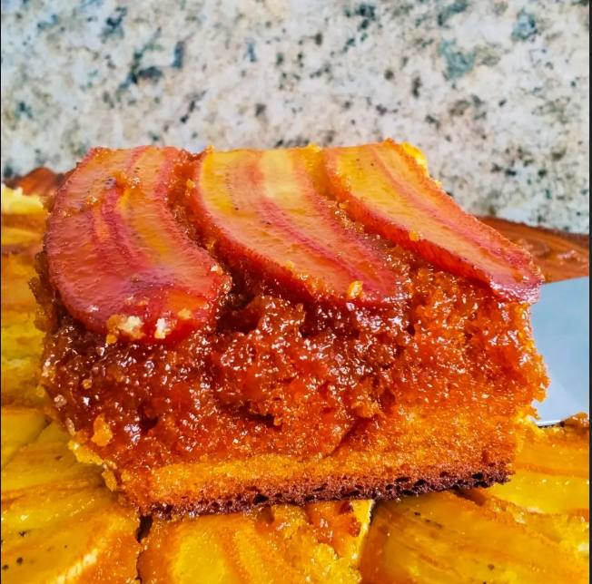
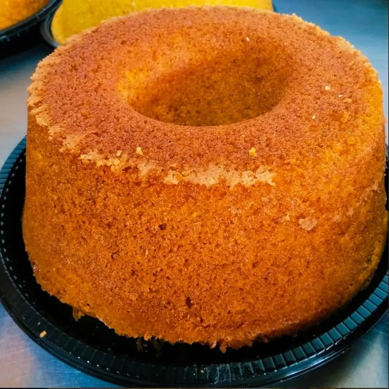
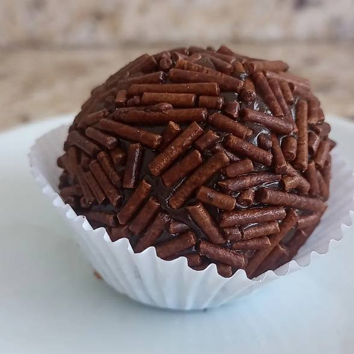
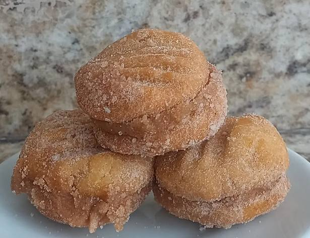
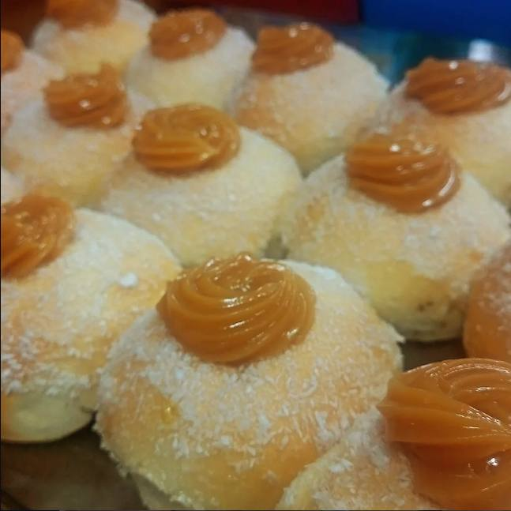

Ribeirão Pires · Roncon
Padaria Joia do TrigoSabor e Tradição no Roncon
Pães sempre quentinhos, frios de qualidade, doces e salgados feitos todos os dias. Aberto todos os dias das 5h30 às 20h.
- 5h30 – 20hTodos os dias
- RetiradaSem fila
- WhatsApp(11) 92141-0537

01
Pães quentinhos
Fornadas ao longo do dia para você levar o pão sempre fresco.
02
Frios de qualidade
Presunto, mussarela e outros frios fatiados na hora, no peso que você quiser.
03
Doces artesanais
Bolos, sonhos, rocamboles e sobremesas feitos com cuidado.
04
Encomenda fácil
Monte o pedido aqui, envie pelo WhatsApp e retire sem fila.
Nossa vitrine
Feitas com carinho, todos os dias






Encomenda para retirada
Monte seu pedido
Escolha os itens, envie pelo WhatsApp e pague na retirada.
Total do pedido
R$ 0,00
Sem o pão francês, cobrado pelo peso
R$ 0,00
Sem o pão francês, cobrado pelo peso
Visite-nos
Esperamos por você
Endereço
Rua Antonieta Colalilo Cordeiro, 10
Roncon, Ribeirão Pires – SP
Horário
Todos os dias
das 5h30 às 20h
Rua Antonieta Colalilo Cordeiro, 10 – Roncon
Toque para abrir no Google Maps